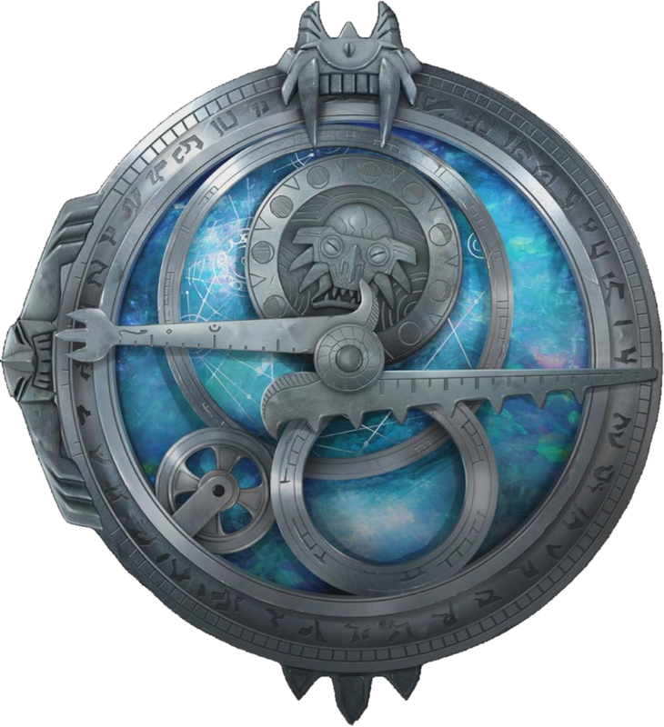
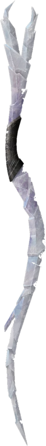
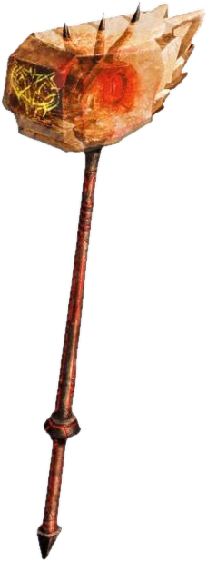

Em Arcadia, um garoto comum recebe o Amuleto da Luz do Dia e se torna o primeiro Caçador de Trolls humano. Sob a cidade, um mundo inteiro luta pela sobrevivência.
Escolha seu lado
Toque no amuleto
Sua escolha muda o site inteiro.
Quem luta por Arcadia, e quem quer destruí-la.
Um garoto comum vira o primeiro Caçador de Trolls humano.
Jim descobre o mundo secreto sob Arcadia e ganha seus aliados.
Os Gumm-Gumms avançam e o Eclipse se aproxima.
Jim enfrenta escolhas difíceis e surge o visual preto e vermelho.
Todos os aliados se unem pela sobrevivência de Arcadia.
Dá ao Caçador a armadura e a espada da luz.
Surge do Amuleto e brilha com a luz azul.
O visual sombrio de Jim em uma fase mais difícil da história.
Arraste para girar as três armas principais da trama.



Espaço do trailer. Role para expandir.
A cidade escondida onde vivem os trolls bons.
Trolls de Gunmar que querem dominar a superfície.
A fortaleza dos trolls, guardada pelo Caçador.
Caçadores de Trolls abriu a trilogia do universo de Guillermo del Toro.
Onde tudo começa.
Dois príncipes alienígenas escondidos em Arcadia.
Magia e Camelot chegam à cidade.
O filme que reúne as três histórias.
Toque nos pontos para explorar.
Cada lugar guarda um pedaço da história.
Toque no card para virar.
Passe o mouse (ou o dedo) para pausar o cubo.
Responda 6 perguntas e descubra se merece o Amuleto.